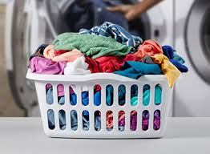
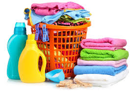
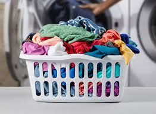
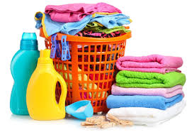
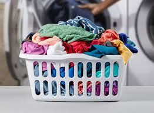
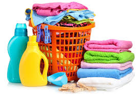

Merawat pakaian dengan benar dapat membuatnya bertahan lebih lama dan tetap terlihat bagus. Gunakan air dingin saat mencuci pakaian berwarna untuk menjaga warnanya, dan pastikan untuk tidak mengisi mesin cuci terlalu penuh agar hasilnya lebih bersih.
Pemilihan deterjen yang tepat sangat penting untuk mendapatkan hasil cuci yang optimal. Pilih deterjen yang sesuai dengan jenis kain dan kebutuhan Anda, apakah untuk noda membandel atau kulit sensitif. Dengan deterjen yang sesuai, pakaian Anda akan tetap bersih dan aman bagi kulit.
Simbol pada label pakaian memberikan petunjuk penting tentang cara merawatnya. Dari simbol pencucian, pengeringan, hingga penyetrikaan, memahami arti dari simbol-simbol ini akan membantu Anda merawat pakaian dengan benar dan mencegah kerusakan.
Noda seringkali menjadi tantangan dalam mencuci. Gunakan penghilang noda sebelum mencuci dan biarkan meresap selama beberapa menit. Untuk noda yang sulit, seperti minyak atau darah, gunakan air dingin dan jangan digosok terlalu keras agar kain tidak rusak.
Menyesuaikan suhu air bisa membuat perbedaan besar. Untuk pakaian putih atau sangat kotor, gunakan air panas. Sementara itu, pakaian berwarna dan kain halus lebih baik dicuci dengan air dingin untuk menjaga warna dan teksturnya.
Pelembut pakaian dapat membantu menjaga kelembutan dan wangi pakaian. Tambahkan pelembut saat pembilasan terakhir untuk hasil terbaik, dan pastikan Anda menggunakan jumlah yang sesuai agar tidak berlebihan dan menyebabkan residu.

